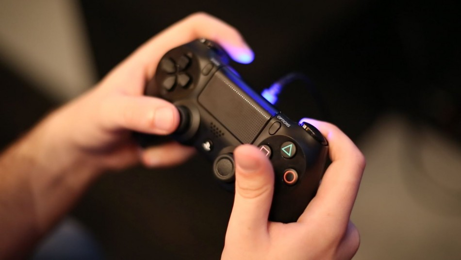
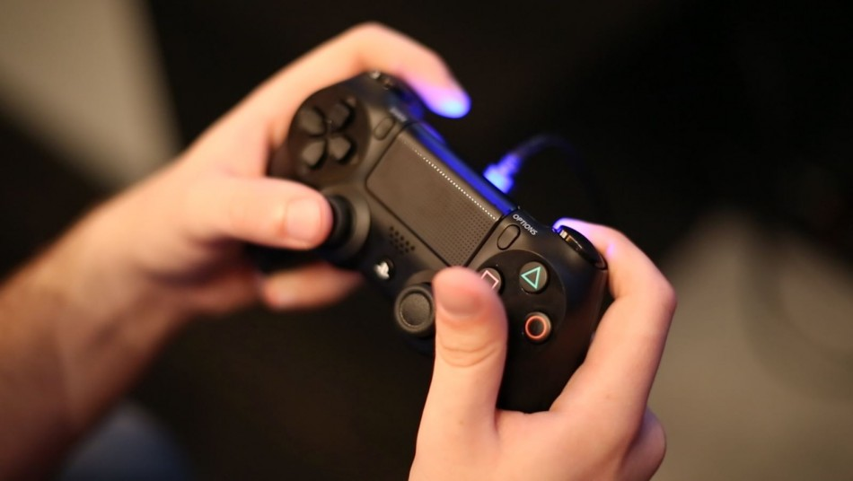

Gaming
I have been a gamer pretty much my entire life. I have always been drawn to games and often lose myself for hours whilst playing. As a PlayStation fanboy I have had every console and handheld since the PlayStation 2, playing titles from Battlefield to Elder Scrolls to FIFA. Playing online with my friends and family is a lot of fun and creates a lot of competition between people that I know. I have recently delved into the PC side of things and that in itself is a very different ballgame opposed to console gaming when it comes spec-ing your pc sand building.